This page will explain how to use the “Project Rose” survey template for the survey you are currently doing
In your workstation, open the Survey123 Connect for ArcGIS application:
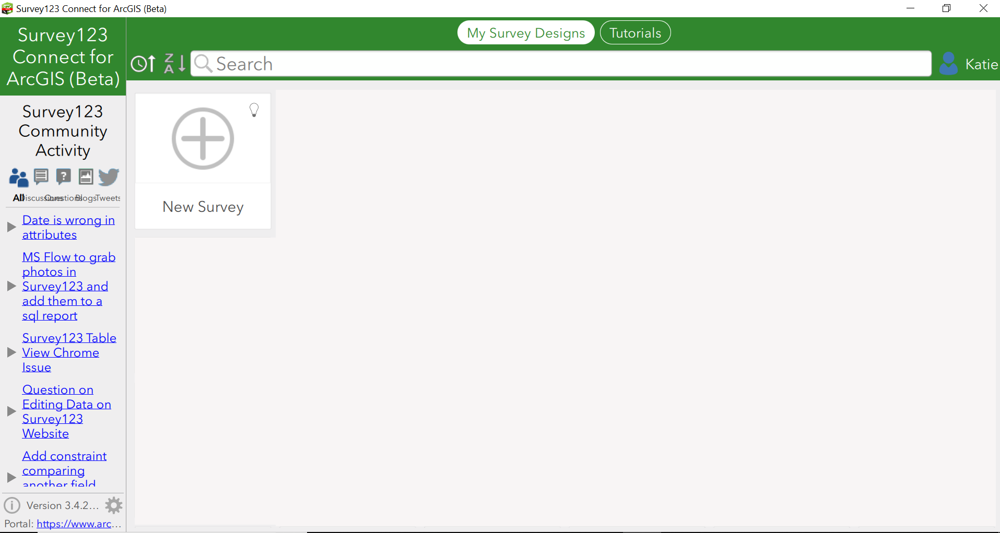
Give your survey a title:
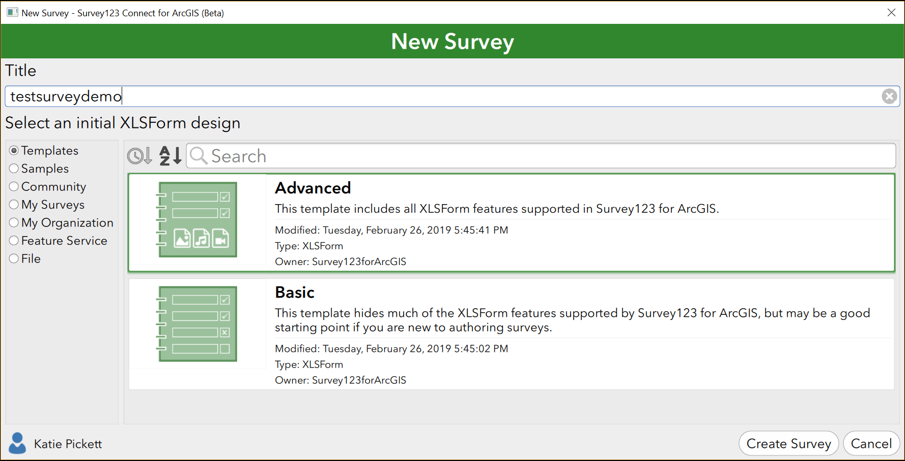
Select the “My Organization” option:
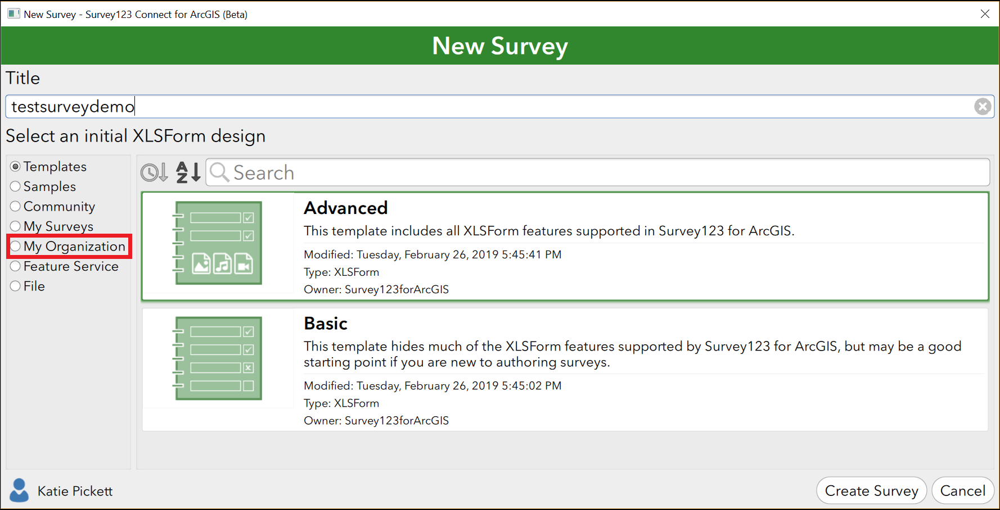
In the search bar, enter “project rose” to find the Project Rose template survey:
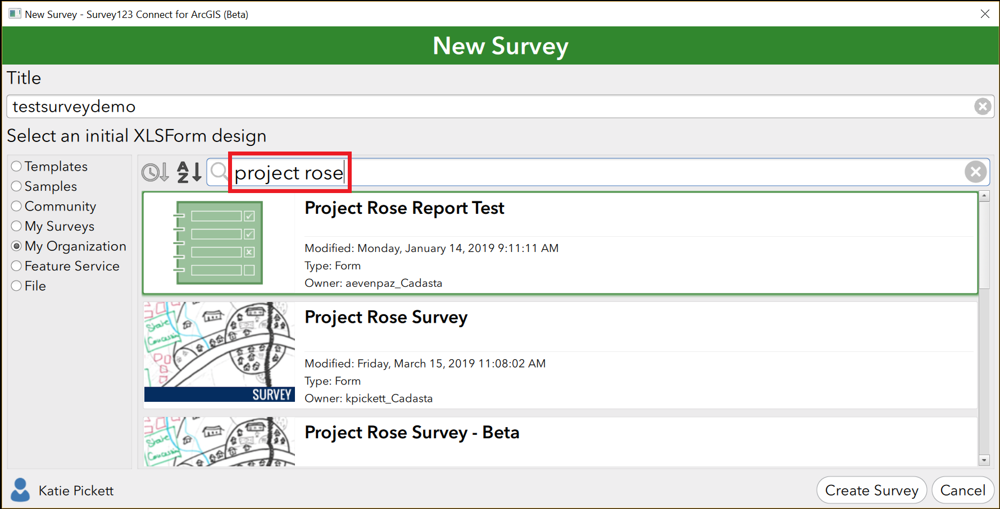
Select the “Project Rose Survey” template:
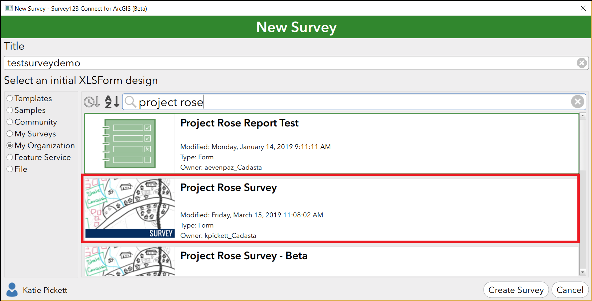
Press the “Create Survey” button:
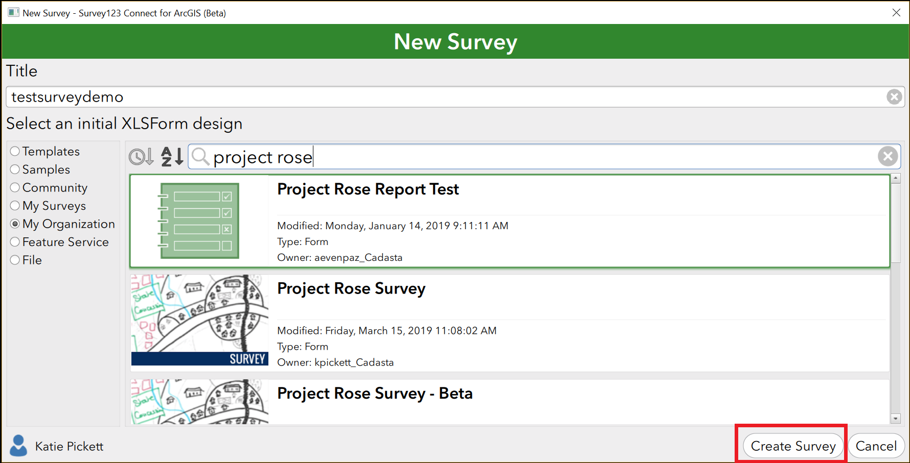
You should be seeing the following window:
Press the XLSForm button on the upper left:
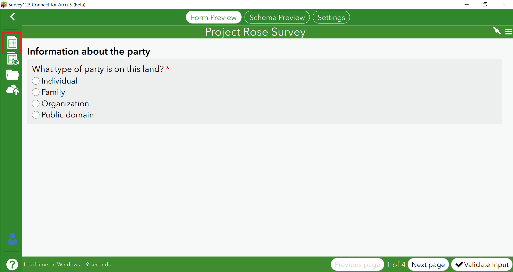
An XLS window with the survey should open up:
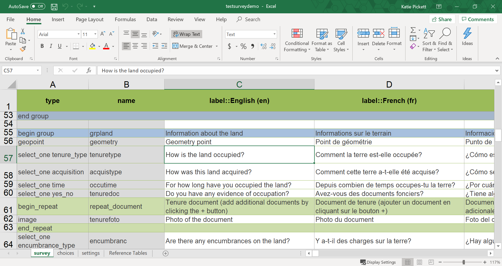
Make sure to save the file:
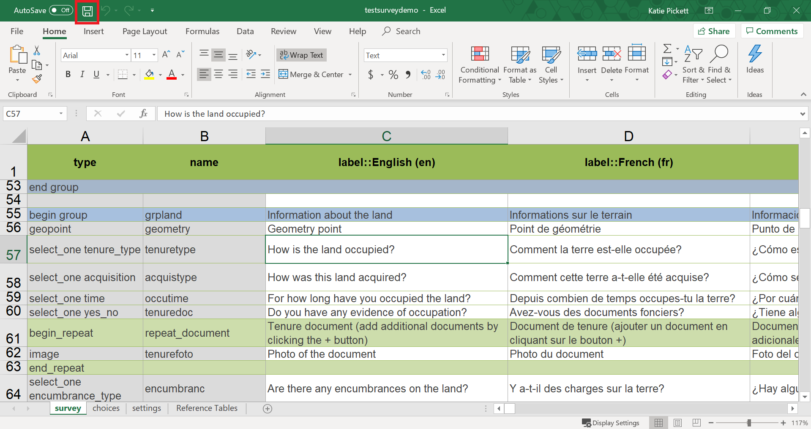
Make changes to your survey as needed:
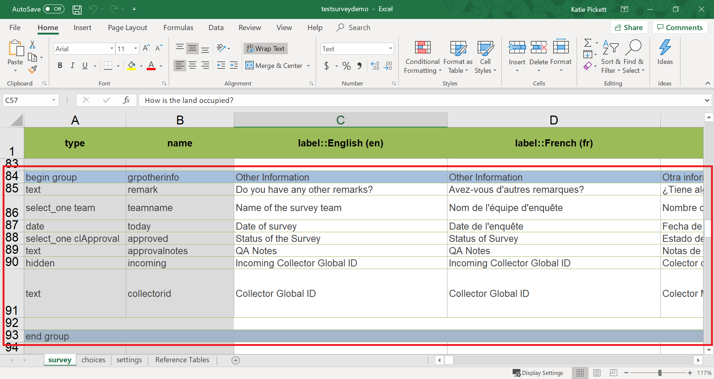
After you have finished making all the required changes, press the “Publish” button:
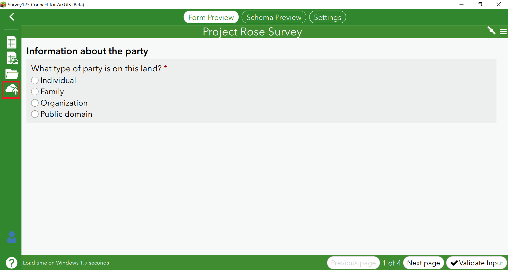